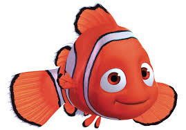
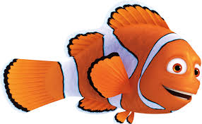
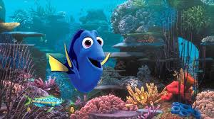
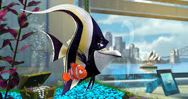
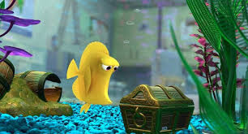
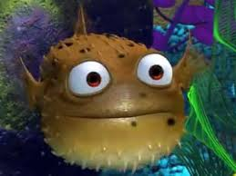
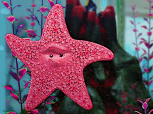
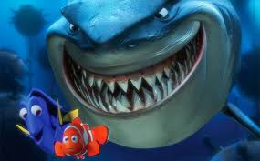

Cast : Nemo

"Nemo"
A young clownfish who gets captured and ends up in a fish tank.

"Marlin"
Nemo's overprotective father who goes on a journey to find him.

"Dory"
A blue tang with short-term memory loss who helps Marlin on his quest.

"Gill"
A moorish idol fish who lives in the tank with Nemo and dreams of escaping.

"Bubbles"
A yellow tang fish in the tank obsessed with bubbles.

"Bloat"
A pufferfish in the tank who swells up when stressed.

"Peach"
A starfish in the tank who sticks to the glass and keeps an eye on things.
